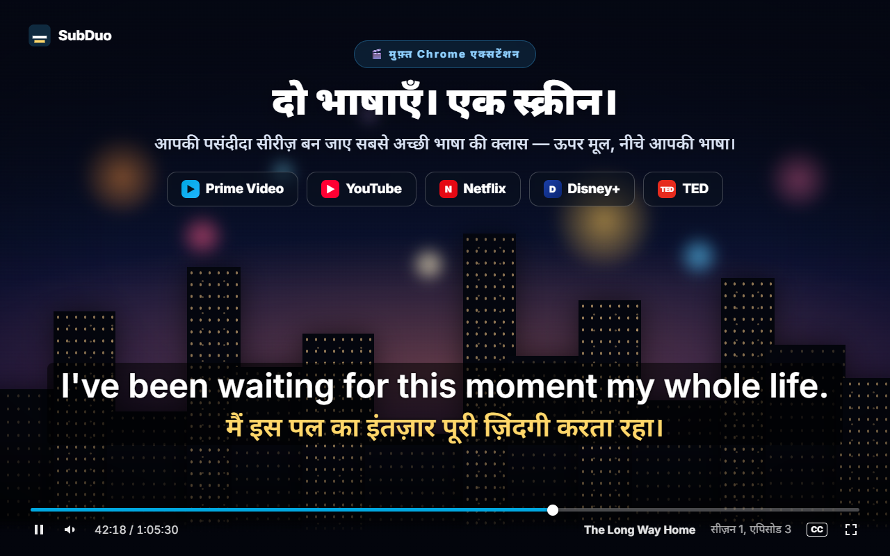
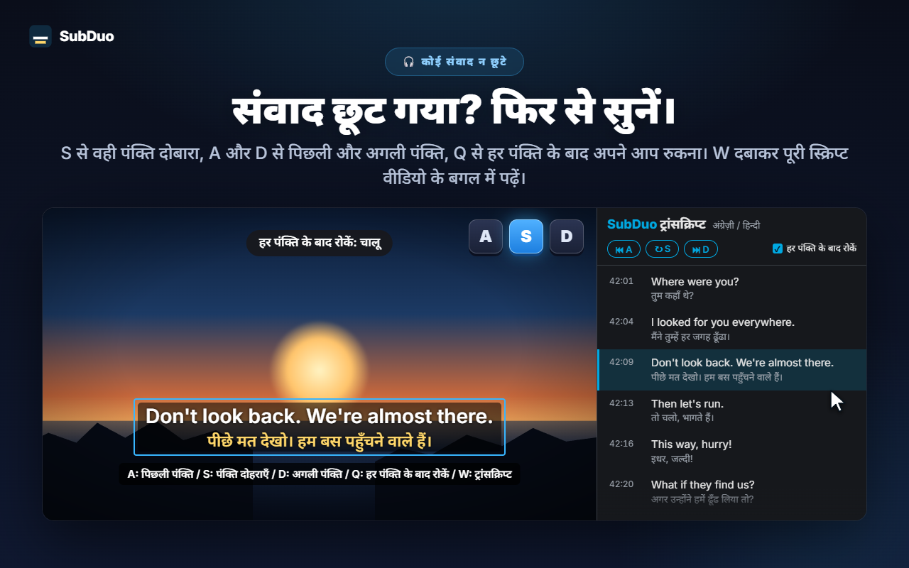
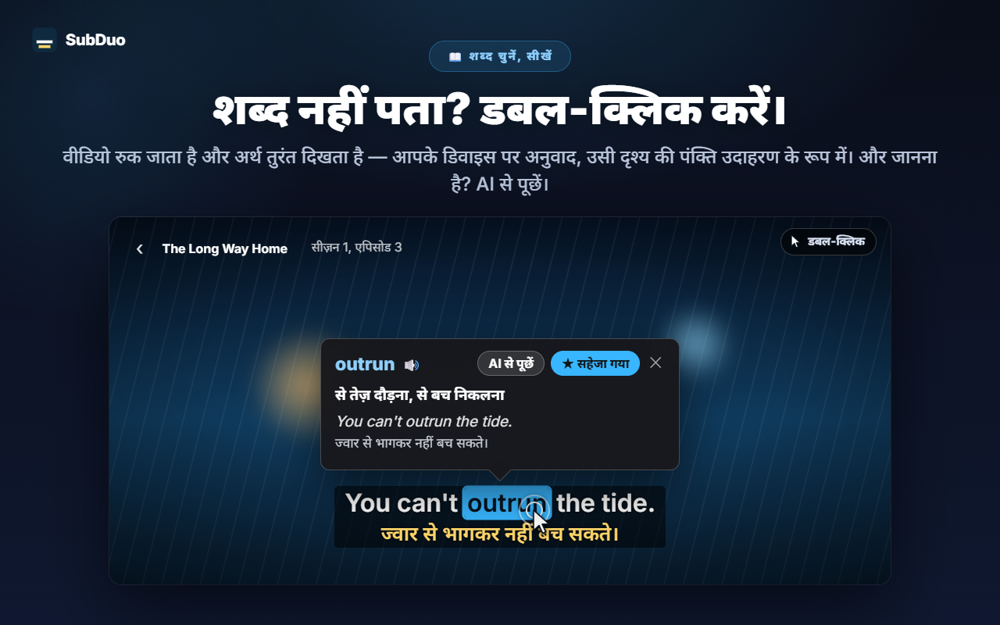
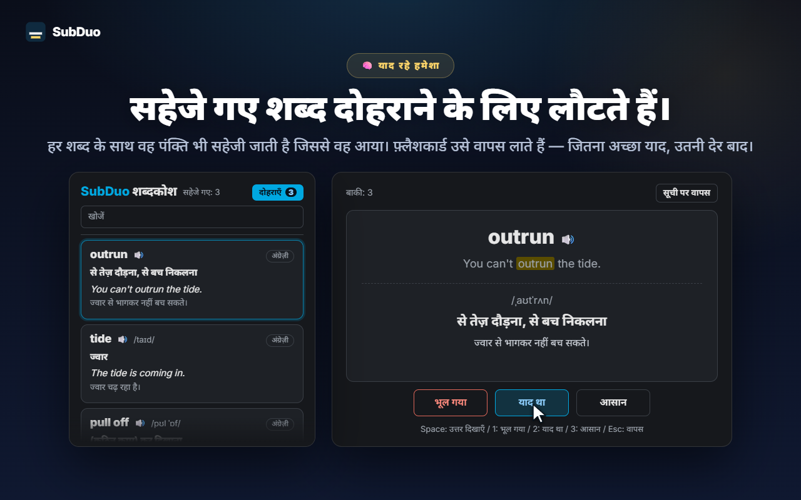

कोई भी दो सबटाइटल भाषाएँ
वीडियो चलते ही साइट के सभी सबटाइटल ट्रैक पहचाने जाते हैं, YouTube के अपने-आप बने सबटाइटल सहित। हर पंक्ति के लिए एक भाषा चुनें, या एक पंक्ति छिपा दें।
SubDuo एक साथ दो भाषाओं के सबटाइटल दिखाता है — ऊपर मूल भाषा, नीचे आपकी भाषा। किसी शब्द पर डबल-क्लिक करके उसका अर्थ देखें, एक कुंजी से पंक्ति दोबारा सुनें, और जो सीखें उसे बिल्ट-इन शब्दकोश में सहेज लें।
हर साइट के अपने सबटाइटल का उपयोग · कोई खाता नहीं · सबटाइटल आपके ब्राउज़र में ही रहते हैं
स्ट्रीमिंग प्लेयर एक बार में एक ही सबटाइटल भाषा दिखाते हैं। SubDuo दूसरी भाषा जोड़ता है — और उससे सीखने के टूल भी।
एक्सटेंशन की असली स्क्रीन, आपकी भाषा में।

टाइटल में उपलब्ध सबटाइटल ट्रैक में से कोई भी दो चुनें — ऊपर मूल भाषा, नीचे आपकी भाषा। सबटाइटल को कहीं भी खींचें, किसी पंक्ति पर स्क्रॉल करके उसका आकार बदलें, और राइट-क्लिक से रंग, पारदर्शिता या धुंधलापन बदलें।

S दबाकर वही पंक्ति दोहराएँ, A और D से पीछे और आगे जाएँ, और Q से हर पंक्ति के बाद अपने-आप रुकें। W दबाकर Chrome के साइड पैनल में ट्रांसक्रिप्ट खोलें — दोनों भाषाएँ, पंक्ति-दर-पंक्ति — और किसी भी पंक्ति पर क्लिक करके सीधे वहीं पहुँचें।

वीडियो रुक जाता है और एक कार्ड तुरंत अर्थ दिखाता है — Chrome के बिल्ट-इन अनुवादक से आपके डिवाइस पर ही अनुवाद, और उदाहरण में उसी दृश्य की पंक्ति। Alt+खींचें से वाक्यांश चुनें। संदर्भ के अनुसार अर्थ, उच्चारण और उदाहरण वाक्य के लिए “AI से पूछें” दबाएँ।

हर सहेजे गए शब्द के साथ वह पंक्ति भी रहती है जिससे वह आया। अपने शब्दकोश में खोजें और छाँटें, उच्चारण सुनें, और फ़्लैशकार्ड से दोहराएँ — कोई शब्द जितना अच्छा याद होगा, वह उतनी ही देर बाद लौटेगा।
न खाता, न सेटअप स्क्रीन। इंस्टॉल करें और प्ले दबाएँ।
Chrome वेब स्टोर से SubDuo इंस्टॉल करें, फिर Prime Video, YouTube, Netflix, Disney+ या TED पर कोई वीडियो चलाएँ।
SubDuo आइकन पर क्लिक करें और ऊपर की पंक्ति के लिए एक सबटाइटल भाषा और नीचे के लिए एक चुनें। सूची में सिर्फ़ वही ट्रैक दिखते हैं जो टाइटल में उपलब्ध हैं।
शब्दों पर डबल-क्लिक करके अर्थ देखें, A, S या D से पंक्तियाँ दोबारा सुनें, और पॉपअप से अपना शब्दकोश खोलें।
उन लोगों के लिए बना जो देखते-देखते सीखते हैं — और चाहते हैं कि ज़रूरत पड़ने तक सबटाइटल बीच में न आएँ।
वीडियो चलते ही साइट के सभी सबटाइटल ट्रैक पहचाने जाते हैं, YouTube के अपने-आप बने सबटाइटल सहित। हर पंक्ति के लिए एक भाषा चुनें, या एक पंक्ति छिपा दें।
किसी शब्द पर डबल-क्लिक या Alt+क्लिक करें, या वाक्यांश के लिए Alt+खींचें। प्लेबैक रुक जाता है और अनुवाद वीडियो पर दिखता है — आपके डिवाइस पर ही।
संदर्भ के अनुसार अर्थ, उच्चारण और उदाहरण वाक्य, आपकी प्रदर्शन भाषा में। रोज़ 20 व्याख्याएँ तक, मुफ़्त।
एक क्लिक में शब्द सहेजें, खोजें, भाषा के अनुसार छाँटें और 🔊 से सुनें। जो शब्द पहले से याद हैं, फ़्लैशकार्ड उन्हें लंबे अंतराल पर लाते हैं।
A से पिछली पंक्ति, S से दोहराएँ, D से अगली। Q हर पंक्ति के बाद रोकता है। खुद को परखने के लिए एक पंक्ति धुंधली करें, फिर उस पर माउस ले जाकर जाँचें।
वीडियो के बगल में दोनों भाषाओं में हर पंक्ति। चल रही पंक्ति हाइलाइट रहती है; किसी भी पंक्ति पर क्लिक करके वहाँ पहुँचें। खोलने के लिए W दबाएँ।
खींचकर हिलाएँ, स्क्रॉल से किसी पंक्ति का आकार बदलें, तीर कुंजियों से बारीक समायोजन करें, बाएँ, मध्य या दाएँ संरेखित करें। हर पंक्ति के रंग, पारदर्शिता और धुंधलेपन के लिए राइट-क्लिक करें।
YouTube पर बड़े सबटाइटल, Netflix पर हल्के — सेटिंग हर साइट के लिए अलग सहेजी जाती है और आपके Chrome से सिंक होती है।
मेनू, अनुवाद और AI व्याख्याएँ आपकी चुनी हुई प्रदर्शन भाषा में होती हैं, जो Chrome की भाषा से अलग हो सकती है।
SubDuo वही सबटाइटल फ़ाइलें पढ़ता है जो हर साइट पहले से आपके ब्राउज़र को भेजती है, और उन्हें वहीं दिखाता है। बाहर सिर्फ़ वह वाक्यांश जाता है जिसके बारे में आप AI से पूछना चुनते हैं, उसकी सबटाइटल पंक्ति के साथ।
सबटाइटल आपके ब्राउज़र में ही पढ़े और दिखाए जाते हैं। आपकी सेटिंग, शब्दकोश और देखने का इतिहास डेवलपर को नहीं भेजे जाते। शब्दों का अनुवाद Chrome के बिल्ट-इन अनुवादक से आपके डिवाइस पर होता है।
जब आप “AI से पूछें” दबाते हैं, तो चुना हुआ वाक्यांश, उसकी सबटाइटल पंक्ति और स्क्रीन पर दिख रही दूसरी पंक्ति, भाषा कोड और एक यादृच्छिक डिवाइस ID (रोज़ की सीमा के लिए) SubDuo सर्वर को जाते हैं, जो व्याख्या के लिए OpenAI से अनुरोध करता है। सेवा चलाने के लिए आपका IP पता प्रोसेस किया जाता है।
साइन अप करने की ज़रूरत नहीं। एक्सटेंशन में कोई विज्ञापन और कोई एनालिटिक्स नहीं है।
सेटिंग और शब्दकोश के लिए “storage”, अपडेट के बाद खुले टैब फिर से जोड़ने के लिए “scripting”, ट्रांसक्रिप्ट के लिए “sidePanel”, और सिर्फ़ पाँच समर्थित साइटों तक पहुँच।
Chrome वेब स्टोर से कुछ ही सेकंड में इंस्टॉल करें